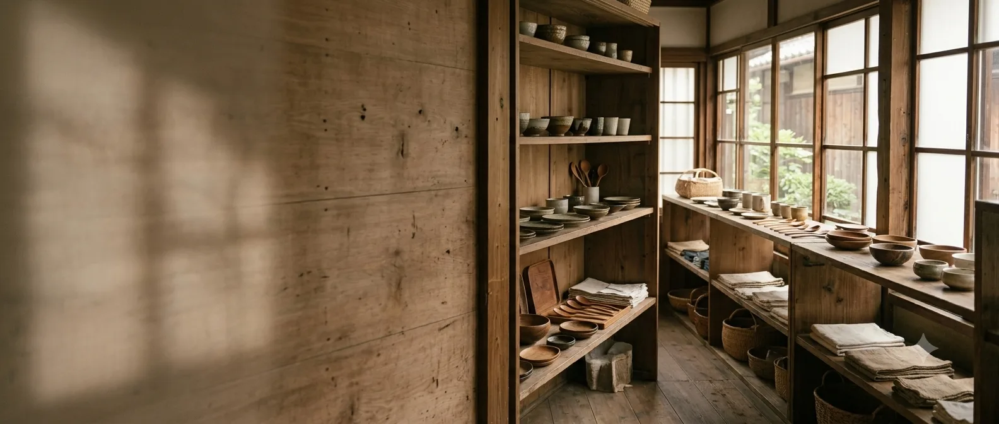
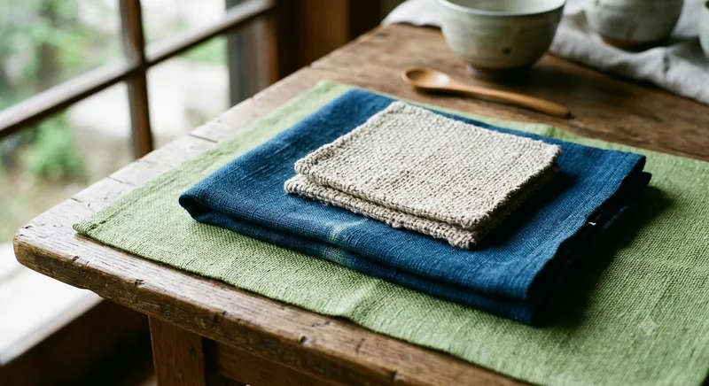
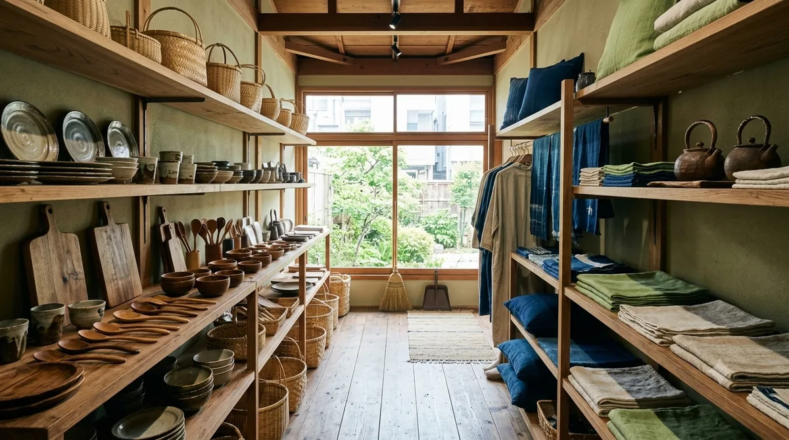

土の表情が、料理を引き立てる。
手仕事雑貨店 つむぎ 暮らしの道具
FUKUOKA ／ CRAFT & DAILY TOOLS
陶器、木の道具、手織りの布、ガラス、かご。店の棚には、つくり手をたずねて選んできたものだけが並んでいます。

全国の工房をたずねて、つくり手と話し、実際に使ってみたものだけを置いています。派手さはなくても、毎日の手にしっくりくるものを。
陶器、木の道具、手織りの布、ガラス、かご。素材も産地もばらばらですが、選ぶ基準はひとつ。「長く使えるか」だけです。
土の表情が、料理を引き立てる。

使うほど、手になじむ。

光を通して、食卓が涼しくなる。

一枚ずつ、織り目がちがう。

編み目の仕事を、暮らしの隅々に。
贈る人を思って、包みます。
欠けたら直す、へたったら手入れする。売って終わりではなく、道具として使い続けていただくところまでがお店の仕事だと思っています。
割れや欠けは、線として残しながら継ぎ直します。
木肌をならして油を入れ、また使える状態に戻します。
織り直しや繕いのご相談も、お持ちいただければ承ります。



お直しのご相談、贈りものの包みのご希望も、お気軽にどうぞ。在庫やお取り置きのお問い合わせもお受けしています。